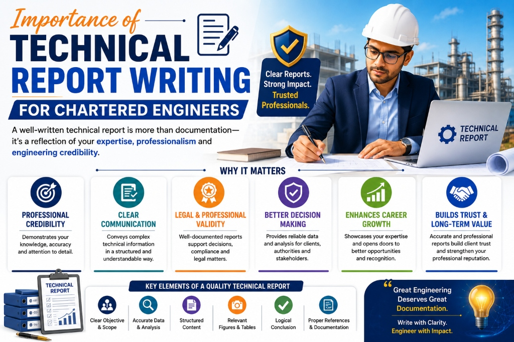

Technical Report Writing for Chartered Engineers
Technical report writing is one of the most critical skills for a Chartered Engineer. While technical knowledge and field experience are fundamental, the ability to present findings clearly in written form defines professional credibility. Engineering reports are not just documents—they are legally and financially significant records used by banks, courts, insurance companies, and corporate organizations.
A well-prepared technical report reflects analytical ability, attention to detail, and professional integrity. For Chartered Engineers, report writing is a direct representation of their expertise.
Why Technical Reports Are So Important
Chartered Engineers are frequently required to issue technical reports for various purposes, including:
- Bank loan approvals
- Property valuation
- Machinery and equipment valuation
- Structural stability certification
- Insurance claim verification
- Project feasibility studies
Financial institutions rely on these reports to assess risk before approving loans. Insurance companies use them to validate claims. Legal authorities may depend on them in dispute cases. Therefore, clarity and accuracy are absolutely essential.
Even a small error in calculation or interpretation can lead to financial loss or legal complications. This highlights the responsibility that comes with technical report writing.
Key Components of a Professional Technical Report
A high-quality engineering report follows a structured format. The essential elements typically include:
1. Introduction and Purpose
The report should clearly state the objective, whether it is valuation, inspection, structural assessment, or feasibility analysis.
2. Site Inspection Details
This section describes the location, condition, observations, and any relevant environmental or structural factors identified during inspection.
3. Technical Analysis and Calculations
Accurate engineering calculations form the backbone of the report. This section should include supporting data, formulas, assumptions, and compliance references.
4. Compliance with Standards
The report must reference applicable engineering codes, safety regulations, and statutory guidelines.
5. Conclusion and Recommendation
A clear, concise final opinion based on technical findings is essential. The conclusion should be logical, professional, and free from ambiguity.
Common Mistakes to Avoid in Technical Reporting
Even experienced engineers can make reporting errors. Common mistakes include:
- Incomplete calculations
- Lack of supporting documentation
- Poor formatting and structure
- Unclear or vague conclusions
- Missing compliance references
These errors reduce credibility and may lead to rejection by financial institutions or authorities. A Chartered Engineer must ensure every report is thorough and professionally presented.
How Strong Report Writing Enhances Career Growth
Technical reporting is not just about documentation—it directly impacts professional reputation. Engineers known for delivering precise and reliable reports gain repeat assignments and referrals. Banks and corporate clients prefer working with Chartered Engineers who maintain high documentation standards.
Strong report writing skills also improve independent consultancy opportunities. Clear communication builds trust, and trust leads to long-term professional relationships.
Moreover, detailed and well-structured reports protect engineers from legal risks by demonstrating due diligence and technical justification.
Best Practices for Effective Technical Reporting
To maintain high standards, Chartered Engineers should:
- Use clear and simple technical language
- Follow a structured format
- Double-check calculations and references
- Maintain proper documentation records
- Keep reports objective and unbiased
- Continuous improvement in writing skills enhances both technical authority and professional image.
Conclusion
Technical report writing is a foundational responsibility of a Chartered Engineer. It bridges the gap between technical analysis and professional communication. Accurate, structured, and well-documented reports strengthen credibility, reduce financial risk, and support informed decision-making.
For Chartered Engineers, mastering technical reporting is not optional—it is essential for long-term success and professional excellence.